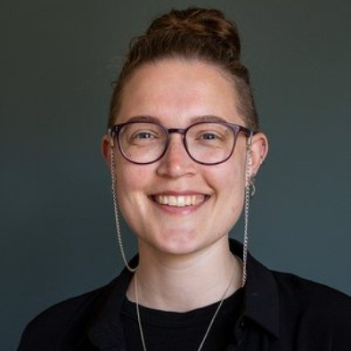

Erfaring
simone.jantzen@gmail.com · linkedin.com/in/simone-juel-jantzen-4143561b1
01. Kunsthal Aarhus
Communications Officer & Online Manager Nuværende
Ansvarlig for Kunsthal Aarhus' sociale medier, online tilstedeværelse og formidling til et bredt publikum – fra content og kampagner til strategi og brand.
Ass. Adm. Medarbejder
Administrativ support i overgangen til den faste kommunikationsrolle.
Studerende praktikant
Praktik med fokus på formidling og kommunikation i en kunsthal.
02. Kommunikation & presse
Kommunikationsrådgiver, Sindslidendes Vilkår
Strategisk kommunikationsrådgivning for en interesseorganisation inden for psykisk sundhed.
Social Media Officer, Juxtapose Art Fair
Stod for sociale medier og digital formidling op til og under kunstmessen.
Bestyrelsesmedlem, Projekt224
Bestyrelsesarbejde for det frivillige projekt, med fokus på strategi og kommunikation.
Presse- og kommunikationsansvarlig, Projekt224
Ansvarlig for presse og ekstern kommunikation gennem tre år.
03. Undervisning & formidling
Instruktør, Struer Karate Klub
Ni et halvt år som instruktør – undervisning, formidling og udvikling af børn og unge i karate.
Lærervikar, Bremdal Skole
Undervisning som vikar, sideløbende med læreruddannelsen.
Omsorgs- og pædagogmedhjælper, Struer Skolehjem
Pædagogisk og omsorgsmæssigt arbejde med unge på bosted.
Lad os snakke
Altid klar på en snak om kommunikation, kultur eller gode historier.